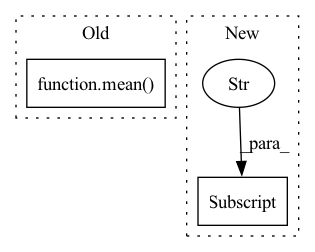

Pattern ID :3497

Before Change
for wav, phn in tqdm(zip(*valid_set), total=len(valid_set[0])):
neural_computations(valid_loss, sb.model, wav, phn, "valid")
validation_wer = float(mean(valid_loss["wer"]))
print(validation_wer)
sys.exit(0)
sb.lr_annealing([sb.optimizer], epoch, validation_wer)
After Change
train_loss = {"loss": []}
for wav, phn in tqdm(zip(*train_set), total=len(train_set[0])):
neural_computations(train_loss, sb.model, wav, phn, "train")
train_loss["loss"] = float(mean(train_loss["loss"]))
// Iterate validataion to check progress
valid_loss = {"loss": [], "wer": []}
In pattern: SUPERPATTERN
Frequency: 3
Non-data size: 2
Instances
Fragment ID: 13392780
Project Name: speechbrain/speechbrain
Commit Name: da125e573704b352bb4c7999f8bbea7bf431e292
Time: 2020-04-07
Author: plantinga.peter@gmail.com
File Name: recipes/ASR_CTC/TIMIT/VGG2_BLSTM_MLP/experiment.py
M Class Name: AnonimousClass
N Class Name: AnonimousClass
M Method Name: main(0)
N Method Name: main(0)
M Parent Class:
N Parent Class:
M File Name: recipes/ASR_CTC/TIMIT/VGG2_BLSTM_MLP/experiment.py
N File Name: recipes/ASR_CTC/TIMIT/VGG2_BLSTM_MLP/experiment.py
M Start Line: 24
M End Line: 47
N Start Line: 25
N End Line: 41
'>
Before Change
for wav, phn in tqdm(zip(*sb.valid_loader())):
neural_computations(valid_loss, model, wav, phn, "valid")
sb.lr_annealing([sb.optimizer], epoch, mean(valid_loss["wer"]))
performance = {
"loss_tr": mean(train_loss["loss"]),
"loss_valid": mean(valid_loss["loss"]),
After Change
train_loss = {"loss": []}
for wav, phn in tzip(*train_set):
neural_computations(train_loss, sb.model, wav, phn, "train")
train_loss["loss"] = mean(train_loss["loss"])
// Iterate validataion to check progress
valid_loss = {"loss": [], "wer": []}
'>
Fragment ID: 13392781
Project Name: speechbrain/speechbrain
Commit Name: 54b495e720866d4f99c7cedf109cdf1fdd982e84
Time: 2020-04-08
Author: plantinga.peter@gmail.com
File Name: recipes/ASR_CTC/TIMIT/RNN/experiment.py
M Class Name: AnonimousClass
N Class Name: AnonimousClass
M Method Name: main(0)
N Method Name: main(0)
M Parent Class:
N Parent Class:
M File Name: recipes/ASR_CTC/TIMIT/RNN/experiment.py
N File Name: recipes/ASR_CTC/TIMIT/RNN/experiment.py
M Start Line: 17
M End Line: 46
N Start Line: 16
N End Line: 48
'>
Before Change
for wav, phn in tzip(*test_set):
neural_computations(test_loss, sb.model, wav, phn, "test")
print("Final WER: %f" % mean(test_loss["wer"]))
def mean(loss):
After Change
for wav, phn in tzip(*valid_set):
neural_computations(valid_loss, sb.model, wav, phn, "valid")
valid_stats = {"loss": mean(valid_loss["loss"]),
"wer": valid_loss["wer_stats"]["WER"]}
sb.lr_annealing([sb.optimizer], epoch, valid_stats["wer"])
sb.save_and_keep_only({"wer": valid_stats["wer"]}, min_keys=["wer"])
'>
Fragment ID: 13392782
Project Name: speechbrain/speechbrain
Commit Name: 4c504abf68fef69963a2fe3bc31386936365e967
Time: 2020-04-08
Author: aku.rouhe@aalto.fi
File Name: recipes/ASR_CTC/TIMIT/VGG2_BLSTM_MLP/experiment.py
M Class Name: AnonimousClass
N Class Name: AnonimousClass
M Method Name: main(0)
N Method Name: main(0)
M Parent Class:
N Parent Class:
M File Name: recipes/ASR_CTC/TIMIT/VGG2_BLSTM_MLP/experiment.py
N File Name: recipes/ASR_CTC/TIMIT/VGG2_BLSTM_MLP/experiment.py
M Start Line: 33
M End Line: 48
N Start Line: 37
N End Line: 54